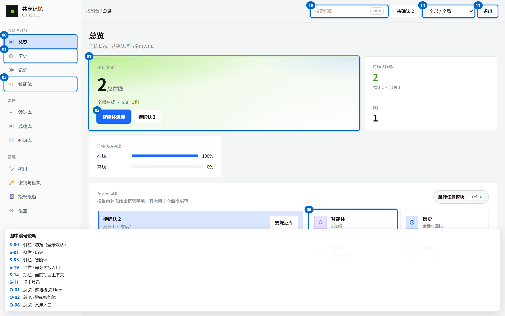
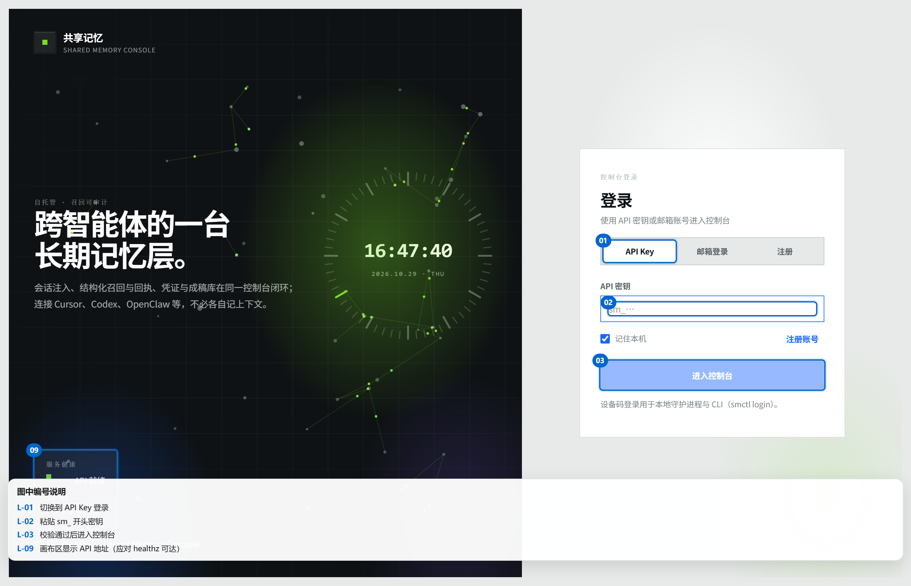
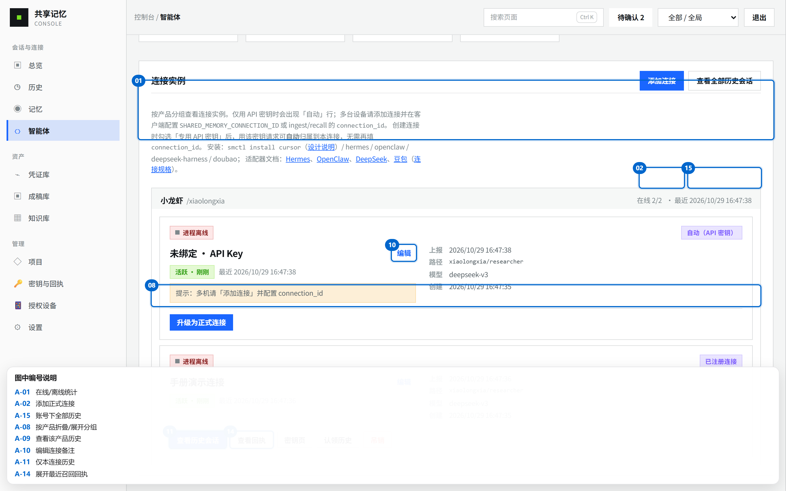
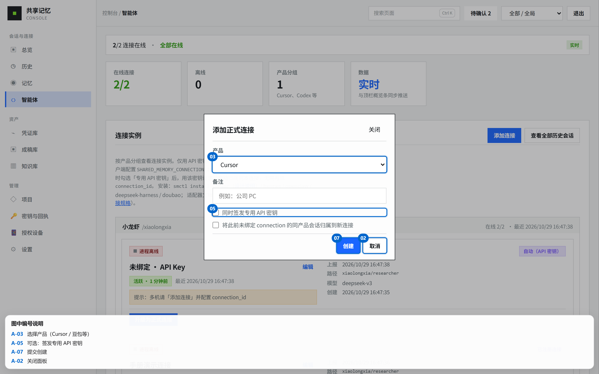
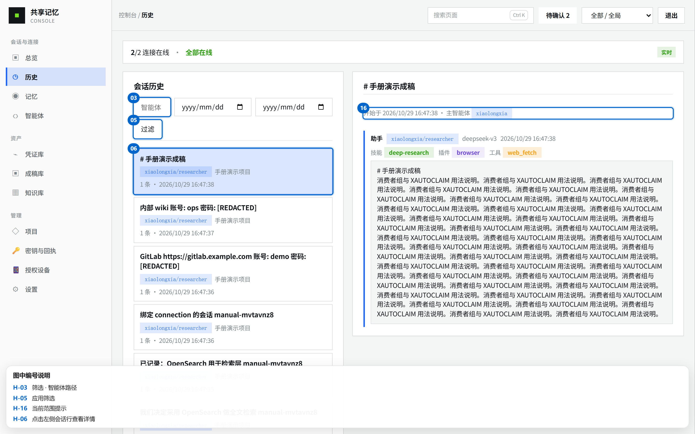

产品版本 v0.1.0 · 自托管控制台操作说明（对齐当前 Web UI）。
请用浏览器打开本页。运维细节见 OPERATIONS-MANUAL.md；
部署与 PUBLIC_API_URL 见 ../deploy/DEPLOYMENT-GUIDE.md。
images/*.png（Playwright 实机截图）；若尚未生成则回退到同名 .svg。
刷新截图：API healthz 正常后，在仓库根执行
powershell -File scripts/capture-manual-screenshots.ps1。
登录后左侧分组导航、顶栏面包屑 / 项目筛选 / 退出；业务页标题下有「连接状态条」（总览页没有）。
┌─ 侧栏 ──────────────┬─ 顶栏 ─────────────────────────────────────┐ │ 会话与连接 │ 控制台 / 当前页 [搜索 Ctrl+K] [项目▼] [退出] │ │ ▣ 总览 ├─────────────────────────────────────────────┤ │ ◷ 历史 │ （非总览时）x/y 连接在线 · 查看智能体 · 实时 │ │ ◉ 记忆 ├─────────────────────────────────────────────┤ │ ⎔ 智能体 │ 页面内容 │ │ 资产 │ │ │ ⌁ 凭证库 │ │ │ ▣ 成稿库 │ │ │ ▦ 知识库 │ │ │ 管理 │ │ │ ◇ 项目 · 🔑 密钥与回执│ │ │ 📱 授权设备 · ⚙ 设置 │ │ └──────────────────────┴───────────────────────────────────────────────┘

登录卡分段控件文案为：API Key · 邮箱登录 · 注册。左下角显示 API healthz 延迟。
┌──────────────────────────────────────────┐ │ 共享记忆 │ │ [ API Key | 邮箱登录 | 注册 ] ← 分段滑块 │ │ │ │ API Key：粘贴 sm_… →「进入控制台」 │ │ 邮箱登录：邮箱+密码 →「登录」 │ │ 注册：≥8 位密码 → 一次性 sm_… → 复制后 │ │ 「已保存，进入控制台」 │ └──────────────────────────────────────────┘

http://127.0.0.1:18080/healthz → ok）。http://127.0.0.1:15173。#overview）。Bento 工作台：连接概览 Hero、待确认/项目侧卡、常用入口磁贴（智能体 / 历史 / 记忆 / 密钥）。
┌─ 连接概览（大）──────────┬ 待确认 / 项目 ─┐ │ 在线 n / 总数 m │ 候选数 · 项目数 │ │ [智能体连接] │ │ ├──────────────────────────┴────────────────┤ │ 在线占比条 │ │ 今天先点哪：智能体 · 历史 · 记忆 · 密钥 … │ └───────────────────────────────────────────┘
按产品分组的连接卡片。组头显示「在线 a/b · 最近时间」与产品级「查看历史」。
连接实例 [ 添加连接 ] [ 查看全部历史会话 ]
| 按钮 | 作用 |
|---|---|
| 添加连接 | 选产品（Cursor / 豆包 / …）、备注、可选「专用 API 密钥」「认领历史」 |
| 查看全部历史会话 | 打开历史页，不限产品与连接 |
┌ Cursor / cursor ──── 在线 1/1 · 最近 … [查看历史] ─┐
组头 查看历史：进入历史页并按该产品（agent）筛选，不限本连接。
│ ┌─ 公司PC ───────────────────────────────────────┐ │ │ │ [进程在线|离线] [已注册连接] │ │ │ │ 公司PC [编辑] │ │ │ │ [活跃 · …] 最近 … │ │ │ │ Key / 上报 / 召回 / 心跳 / 创建 … │ │ │ │ （豆包仅心跳时）提示：须 Skill 调用 ingest │ │ │ │ │ │ │ │ [查看历史会话] [查看回执] [下载配置脚本] │ │ │ │ [配置步骤] [密钥页] [认领历史] [吊销] │ │ │ └─────────────────────────────────────────────────┘ │
| 卡片按钮 | 作用 |
|---|---|
| 查看历史会话 | 历史页且仅本连接（带 connection_id） |
| 查看回执 | 行内展开最近召回回执 |
| 下载配置脚本 | 需创建时勾选专用 Key；zip 内已含密钥与 PUBLIC_API_URL |
| 配置步骤 | Cursor / 豆包引导；密钥可回显（若脚本仍在） |
| 密钥页 / 认领历史 / 吊销 | 跳转或管理该连接 |


memory_ingest。
左列表、右详情。推荐从智能体卡片进入，避免混进其它连接的会话。
┌─ 会话历史 ─ 筛选：智能体 / 日期 ─ [过滤] [清除范围] ─┐ │ 当前范围：智能体 cursor · 仅连接 a1b2c3d4… │ │ （或：不限连接 / 账号下全部会话） │ │ ┌ 列表 ──────────┐ ┌ 详情 ──────────────────────────┐ │ │ │ 标题 · agent │ │ 开始于 … · 主智能体 │ │ │ │ n 条 · 时间 │ │ 用户/助手消息 · 技能/插件/工具 │ │ │ └────────────────┘ └────────────────────────────────┘ │ └───────────────────────────────────────────────────────┘

| 模块 | 做什么 |
|---|---|
| 记忆 | 召回试跑、画像、实体别名、记忆更正/失效 |
| 凭证库 | 待确认口令入库 / 拒收；查看需登录密码 |
| 成稿库 | 待确认成稿保存；导出 Markdown；可入知识库 |
| 知识库 | 上传文档、状态 pending→ready、参与召回 |
| 项目 | 创建/切换项目上下文 |
| 密钥与回执 | 签发/吊销 API Key；查看 Recall Receipt |
| 授权设备 | 设备码登录（smctl login）后的 Daemon 设备 |
| 设置 | 账号策略、Embedding 等 |
配图：images/05-memory … 12-settings（png 优先，否则 svg）。
.cmd（与 Cursor 同一 Windows 用户）。credentials.json。说明见公开文档中的 Cursor 稳定安装说明。验证版本：Cursor Windows 3.27.14。
shared-memory-mcp.exe 的绝对路径SHARED_MEMORY_API_URL / API_KEY / AGENT=doubao / CONNECTION_IDshared-memory；新开工作任务，用 Skill 做 recall + ingest。配置脚本与控制台「配置步骤」里的 API 地址，来自 API 进程的 .env，不是前端写死域名。
# 仓库根目录 .env HTTP_ADDR=:18080 PUBLIC_API_URL=http://你的域名:端口 # 客户端必须能访问到 # 本机同机调试可用： # PUBLIC_API_URL=http://127.0.0.1:18080
SHARED_MEMORY_API_URL。GET /v1/me → public_api_url 展示。PUBLIC_API_URL 专节。